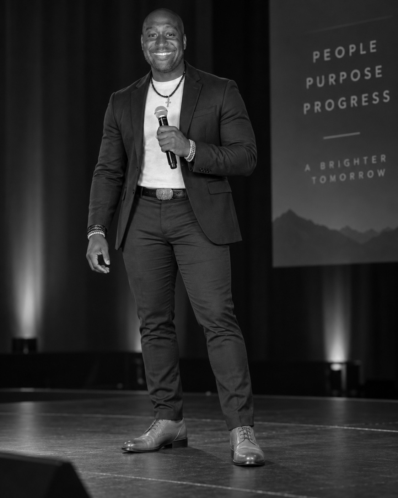
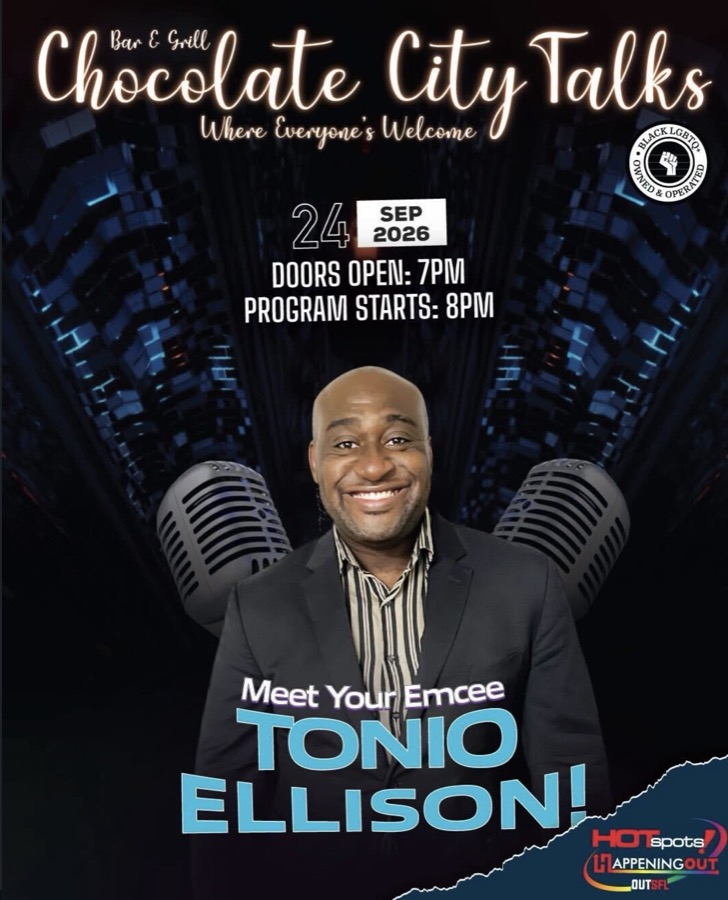

Antonio “Tonio” Ellison
Real conversations.
Real impact.
Antonio “Tonio” Ellison is a speaker, host, facilitator and community advocate creating spaces where people can speak honestly, feel heard and connect.
I’ve always been the person people talk to.
Sometimes it happens after an event.
Sometimes it happens in a room full of people.
Sometimes someone just needs a place where they can finally say what they’ve been carrying.
That’s where a lot of my work begins.
About Tonio
Antonio “Tonio” Ellison, MS, CLC
My work started long before there was a title for it.
I’ve spent years showing up in community spaces: hosting conversations, listening, advocating, connecting people to resources and helping create places where people feel safe enough to be honest.
Today, that work takes me into speaking, hosting, community advocacy, peer support, workshops and private conversations.
I’m especially committed to people and communities who have historically been overlooked, unheard or left out of important conversations.

What I do
01Speaking + Hosting
Keynotes, panels, moderation and emceeing for events, organizations and community conversations.
02Community + Advocacy
Work centered around LGBTQ+ community, HIV awareness, PrEP advocacy, peer support, access and helping people feel seen and heard.
03Workshops + Facilitation
Guided conversations and group experiences around expression, self-advocacy, resilience and community.
04Private Conversations
One-on-one support for people navigating transitions, finding their voice or needing space to think through what comes next.
People deserve
to feel seen.
My advocacy work is deeply connected to the communities I come from and serve.
It includes LGBTQ+ advocacy, HIV awareness and prevention, PrEP awareness, peer support, community health conversations and connecting people with resources.
For me, advocacy isn’t about speaking for people. It’s about helping people have access to information, space and support so they can speak for themselves.
Seen.
Heard.
Informed.
Supported.
I care about what happens after the event ends and everybody goes home.
Speaking + Hosting
Bring Tonio
into the room.
I host, speak and help people talk to one another. Whether it’s a panel, a community gathering or a room full of new faces, I want people to feel part of the conversation.
- Keynote speaking
- Panelist
- Panel moderation
- Hosting + emceeing
- Community conversations
- Workshop facilitation
Hosted by Tonio
Chocolate
City Talks
Healing through the power of spoken words.
Come to speak.
Come to listen.
Come as you are.
Antonio “Tonio” Ellison · Recurring emcee & host

View event flyerFor current details, follow “Take the mic.”
Sometimes the conversation needs to be one-on-one.
Tonio offers private conversations for people navigating transitions, finding their voice, strengthening self-advocacy or simply needing somewhere to talk through what comes next.
Start a conversationBook Tonio.
Antonio “Tonio” Ellison, MS, CLC
Bring Tonio into your next event, workshop or community project. Tell me a little about what you have in mind.
Share a little about your event or opportunity.